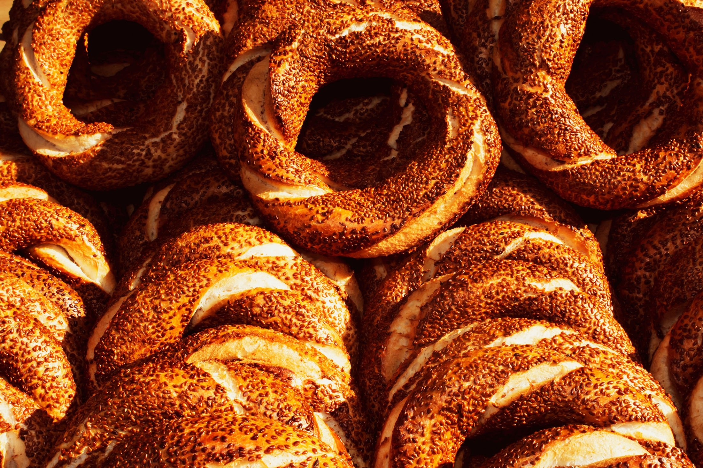
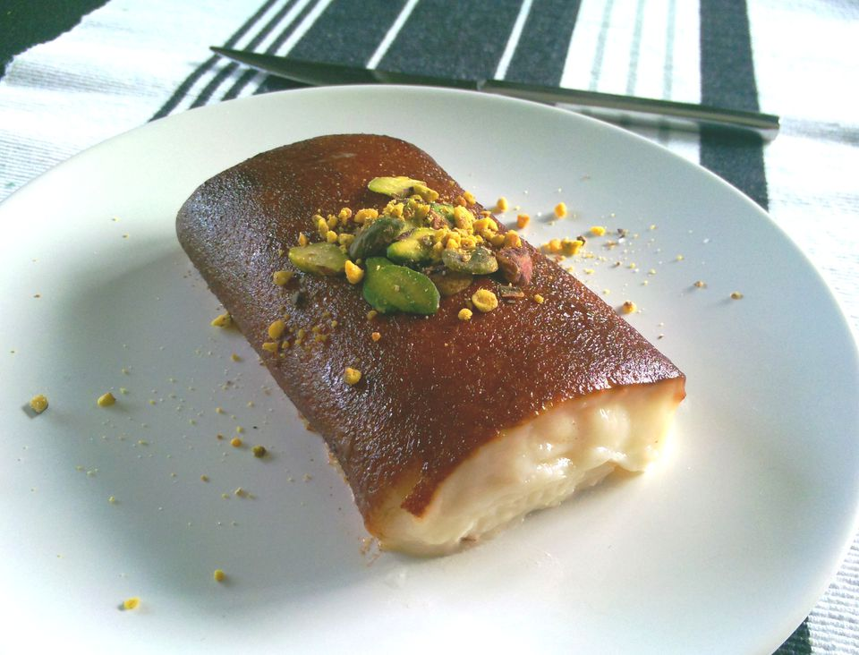
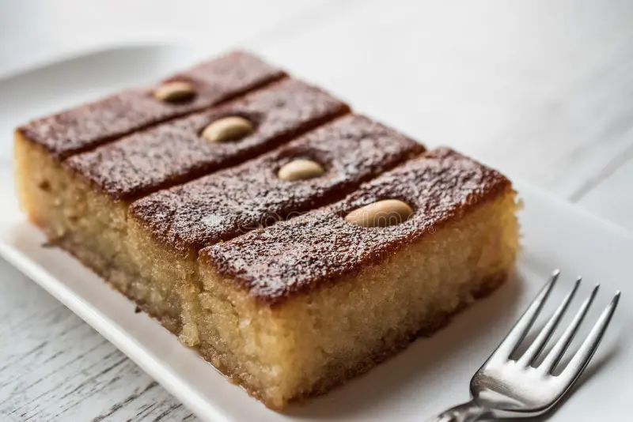

Welcome to We-cook
Where Tradition Meets Taste
Explore Our ShopOur Bestsellers

Baklava
Delicate layers of phyllo and pistachio goodness.

Simit
Traditional Turkish sesame bread rings.

Kazandibi
Delicious caramelized milk pudding.

Sambali
Dense and moist semolina cake sweetened with syrup, often garnished with almonds or peanuts.

lor
Lor cheese is traditionally made from whey, the liquid byproduct of cheese production.
About We-cook
At We-cook, we bring you the finest Turkish bakery delights, handcrafted with love and tradition. From baklava to freshly baked bread, every bite is a journey to Turkey’s rich culinary heritage.